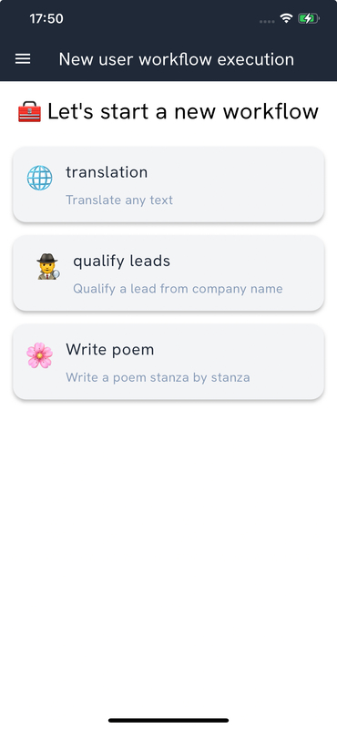

How Workflows are run?
This document provides an overview of the concept related to the workflow execution process in the Mojodex platform and describes the sequence of events that occurs from the moment a user initiates a new workflow execution until the workflow is completed and the result is delivered.
Main concepts
The workflow execution process involves several concepts matching database tables.
Workflow
- Workflow concept is fully described in this doc. Basically, a worflow is a some complex process the assistant can help the user with. A workflow is fully configurable.
Workflow Step
- A
workflow_stepis a single step in a workflow. It is made of {input specification, execute method, output specification}. The execute method is the core of the step, it is where the step does its job. The input and output specification are used to validate the input and output of the step. A step can be run multiple times in a workflow, with different inputs and outputs.
User Workflow
- Each user has its own set of workflows it can launch with Mojodex. A
user_workflowstands for the association between a user and a workflow.
User Workflow Execution
- A
user_workflow_executionrepresents the instance of a workflow being executed by a user. It captures various details such as the start time and any relevant metadata pertaining to the execution of a specific workflow by a user.
Note, sometimes refered as
workflow_executionfor short.
User Workflow Execution Step Execution
- A
user_workflow_execution_step_executionrepresents the instance of a step being executed within a workflow execution.
Session
- A
sessionrepresents an interaction between the user and the assistant. It captures the messages exchanged between the user and the assistant, as well as the state of the conversation at any given time. Auser_workflow_executionalways needs asessionfor the user and its assistant to co-work on the workflow.
Message
- A
messagerepresents a single message exchanged between the user and the assistant within a session. It captures the content of the message, sender, timestamp of the message, and other relevant metadata depeding on the type of message. In the database, ajsonfield is used to store the content of the message, allowing high flexibility regarding stored data.
Workflow execution workflow
The workflow execution workflow is a sequence of events that occur from the moment a user initiates a new workflow execution until the workflow is completed. The workflow is described below.
1. User Workflow Execution Creation
Creation of execution is done as soon as the user hits the card of the workflow they want to create.

This generates a call to PUT /user_workflow_execution to the backend (backend/app/routes/user_workflow_execution.py), specifying the user_workflow the user wants to execute.
This call creates a User Workflow Execution instance in the database and a session if not already exists (which is the case in current Mojodex implementations).
from mojodex_core.entities.db_base_entities import MdUserWorkflowExecution
[...]
class UserWorkflowExecution(Resource):
[...]
def put(self, user_id):
[...]
session_creation = self.session_creator.create_session(user_id, platform, "form")
[...]
session_id = session_creation[0]["session_id"]
[...]
db_workflow_execution = MdUserWorkflowExecution(
user_workflow_fk=user_workflow_pk,
session_id=session_id,
json_inputs=empty_json_input_values
)
db.session.add(db_workflow_execution)
db.session.commit()
This call also returns a json representation of the workflow, including json_inputs_spec to display to the user in the interface so that user have the instructions to start. Those input fields are the one defined in the workflows's json configuration file as json_inputs_spec.
return {
"workflow_name_for_user": "<workflow_name_for_user>",
"workflow_definition_for_user": "<workflow_definition_for_user>",
"user_workflow_execution_pk": < pk >,
"user_workflow_fk": < fk >,
"steps": [{
"workflow_step_pk": < workflow_step_pk >,
"step_name_for_user": "<step_name_for_user>",
"step_definition_for_user": "<step_definition_for_user>"
}, ...],
"validated_steps_executions": [step_execution.to_json() for step_execution in
self.past_accepted_steps_executions],
"session_id": < session_id >,
"inputs": < json_inputs >
}
2. User Workflow Execution Start
From those instructions, there are 2 ways to start the workflow:
2.1. User Workflow Execution Start from filled form
This is the method used in the web interface. The user fills the form and submit it. This generates a call to POST /user_workflow_execution to the backend (backend/app/routes/user_workflow_execution.py), specifying the user_workflow_execution_pk received at previous step and the values of filled form.
Resource associated to the route updates the User Workflow Execution instance and instanciate a Python object WorkflowExecution.
Finally, it launches in a parallel thread the start of the workflow by running workflow.run method.
[...]
class UserWorkflowExecution(Resource):
[...]
def post(self, user_id):
[...]
db_workflow_execution.json_inputs = json_inputs
flag_modified(db_workflow_execution, "json_inputs")
db_workflow_execution.start_date = datetime.now()
db.session.commit()
workflow_execution = WorkflowExecution(user_workflow_execution_pk)
server_socket.start_background_task(workflow_execution.run)
[...]
The WorkflowExecution is the epicenter of workflow execution. The function run() will:
- Determine what is the current step to run with what parameter and create the corresponding step execution object.
- Run current step
- Ask for user validation once the step is executed

The Workflow Execution detailled flow is described in part 3.
2.2. User Workflow Execution Start from user message
TODO - NOT IMPLEMENTED YET
3. Workflow Execution
A Workflow Execution is a Python object that manages the execution of a workflow. It corresponds to a user_workflow_execution in the database.
It has a list of WorkflowStepExecution objects, one for each step of the workflow. The current step to run is determined by the _get_current_step() method.
The entry point of the workflow execution is the run method of the WorkflowExecution class. This method is called in a parallel thread when the user starts the workflow execution or when a step needs to be executed (because of user validation or because of a user instruction to re-execute).
class WorkflowExecution:
[...]
def run(self):
[...]
if not self._get_current_step():
return
self._get_current_step().execute(self.initial_parameters, self._past_validated_steps_results, self.db_object.session_id)
self._ask_for_validation()
[...]
3.1 Determining current_step
The _get_current_step() method determines the current step to run:
class WorkflowExecution:
[...]
def _get_current_step(self):
[...]
if self._current_step: # if current step already determined, return it
return self._current_step
if not self.validated_steps_executions: # no step validated yet, start from first step
self._current_step = self._generate_new_step_execution(self._db_workflow_steps[0], self.initial_parameters) # of first step
return self._current_step
last_validated_step_execution = self.validated_steps_executions[-1]
if len(self.validated_steps_executions) > 1: # no dependency as it was the first step
db_dependency_step = [...]
# depency step is the workflow_step of step execution that created last_validated_step_execution inputs
# It is the workflow_step ranked just before the last_validated_step_execution's workflow_step in the workflow
# find last execution of dependency step
db_dependency_step_execution = [...]
# How many parameters have been executed and validated for last_validated_step_execution's workflow_step?
current_step_executions_count = [...]
# have all parameters resulting from db_dependency_step_execution been executed and validated?
if current_step_executions_count < len(db_dependency_step_execution.result):
current_parameter = db_dependency_step_execution.result[current_step_executions_count]
self._current_step = self._generate_new_step_execution(last_validated_step_execution.workflow_step, current_parameter)
return self._current_step
# else, generate new step execution of next step
next_step = [...]
if next_step is None:
return None # end of workflow
# else
self._current_step=self._generate_new_step_execution(next_step, last_validated_step_execution.result[0])
return self._current_step
[...]
3.3 Executing a step
Executing a step consists in executing the step on a certain parameter as input. A socketio message is sent to client before starting execution to update the client interface.
class WorkflowExecution:
[...]
def execute(self, initial_parameter: dict, past_validated_steps_results: List[dict], session_id: str):
[...]
step_json = self.to_json()
step_json["session_id"] = session_id
server_socket.emit('workflow_step_execution_started', step_json, to=session_id)
self.result = self.workflow_step.execute(self.parameter, self.get_learned_instructions(), initial_parameter, past_validated_steps_results)
[...]
3.4 Asking for validation
Once the step execution is done, the user is asked to validate the result. This is done by sending a socketio message to the client application:
def _ask_for_validation(self):
[...]
step_execution_json = self._get_current_step().to_json()
step_execution_json["session_id"] = self.db_object.session_id
server_socket.emit('workflow_step_execution_ended', step_execution_json, to=self.db_object.session_id)
[...]
4. User validation
4.1. User validates
If the user validates the result of the run, the route POST /user_workflow_execution_step_executionis called with value validated set to True. This route updates the user_workflow_execution_step_execution instance in the database and triggers the next step execution with workflow.run in a dedicated thread.
class UserWorkflowStepExecution(Resource):
[...]
def post(self, user_id):
[...]
workflow_execution = WorkflowExecution(user_workflow_execution.user_workflow_execution_pk)
if validated:
workflow_execution.validate_step_execution(user_workflow_step_execution_pk)
server_socket.start_background_task(workflow_execution.run)
[...]
4.2. User does not validate
If the user does not validate the result of the run, the route POST /user_workflow_execution_step_executionis called with value validated set to False.
This route adds a system message in the workflow execution's session to store a view of the workflow state at this point in the conversation. This message contains the achieved step until current checkpoint and the current steps executions after current checkpoints (steps that can still be re-executed).
Then, the user will send a message using common route PUT user_message. This message will be eventually transcripted if it was audio and transfer to a session through method process_chat_message.
The process chat message will decode the message and send it to WorflowResponseGeneratorlocated in backend/app/models/session/assistant_message_generators. This class will generate the assistant response to user request from on going workflow's conversation (including the system messages).
The goal of the assistant is to capture the new user instruction to re-execute the step with the same input but a new orientation. To do that, the LLM can answer with 3 types of tags:
: If the user asked the assistant to edit something in ACHIEVED STEPS, the assistant will explain why it is not possible to edit this past checkpoint steps. : If the user is not clear enough in its request for re-execution, the assistant will ask for clarification until it gets a clear instruction. coming along with : once the assistant caught the user instruction, it will respond by encapsulating the user instruction in a tag and add a message to inform the user that the instruction has been taken into account into tag.
Once the assistant capture the user instruction, it will: - Invalidate the step - Launch a new run of the workflow in a dedicated thread
The invalidation method is as follow:
class WorkflowExecution:
[...]
def invalidate_current_step(self, learned_instruction):
[...]
current_step_in_validation = self._get_last_step_execution() # the step execution we went to invalidate is the last one
current_step_in_validation.invalidate(self.db_object.session_id) # set validated to False in database and send socketio message to client
if current_step_in_validation.workflow_step.is_checkpoint: # if this step is the checkpoint, it is the one that will learn from this failure
current_step_in_validation.learn_instruction(learned_instruction)
return
# If the step in validation is not a checkpoint, find the previous one that is a checkpoint
checkpoint_step = self._find_checkpoint_step()
# for all step in self.validated_steps_executions after checkpoint_step, invalidate them
checkpoint_step_index = self.validated_steps_executions.index(checkpoint_step)
for validated_step in self.validated_steps_executions[checkpoint_step_index:]:
validated_step.invalidate(self.db_object.session_id)
# remove from validated_steps_executions
self.validated_steps_executions.remove(validated_step)
# checkpoint_step learns from this failure
checkpoint_step.learn_instruction(learned_instruction)